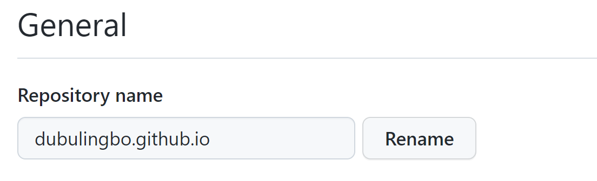

# 缘起
鉴于共享学习与开放交流精神，将个人博客开放到外网。（看上去有点 zhuang）其实真是原因就是 1：租服务器成本太高；2：还得买域名和搭建环境，太麻烦，不太适合初学者（后续考虑迁移到自己云服务器）。
# 构建 hexo 博客页面
关于如何搭建 hexo 环境写博客，请参考 hexo 博客搭建教程
进入博客根目录，执行下述命令
- hexo clean ：清理原来的构建痕迹，已便重新构建
hexo generate | hexo g ：生产静态页面，默认会在<root>/public目录下- hexo deploy ：部署网站
# 发布到 GitHub Pages
官网教程：https://docs.github.com/en/pages
# 新建 Git repository
仓库的名称一定要是
github账号.github.io<sup>①</sup>，且为 public
在 <root>/_config.yml 中添加如下配置：
# 文章路径配置，否则不能通过链接访问url: https://dubulingbo.github.io
root: /
# 部署服务器配置deploy:
type: git
repo: https://github.com/dubulingbo/dubulingbo.github.io.git
branch: gh-pages
# 部署
在项目的根目录 ==<root>== 下，执行
hexo deploy #或者 hexo d |
至此，您的博客就已经成功部署到 github 上，并且通过键入 你的github账号.github.io 就能访问呢。感谢无名大佬们，让我终于倒腾出来了，后续再去弄清楚配置一键部署。
# 参考资料
- https://hexo.io/zh-cn/docs/github-pages
- https://blog.csdn.net/Night__breeze/article/details/117607049
<hr />
① 如果这么配置，将会出现静态资源文件获取 404，且访问博客首页时需得叫上仓库名才行，即 你的github账号.github.io/仓库名